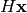
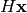

Module: transform.project¶
Image projection.
Functions¶
| scikits.image.transform.project.homography(...) | Perform a projective transformation (homography) on an image. |
homography¶
- scikits.image.transform.project.homography(image, H, output_shape=None, order=1, mode='constant', cval=0.0)¶
Perform a projective transformation (homography) on an image.
For each pixel, given its homogeneous coordinate
![\mathbf{x}
= [x, y, 1]^T](../images/math/1aa9d7913003fccfc89a3c2961147dac616653a4.png) , its target position is calculated by multiplying
with the given matrix,
, its target position is calculated by multiplying
with the given matrix,  , to give .
E.g., to rotate by theta degrees clockwise, the matrix should be
, to give .
E.g., to rotate by theta degrees clockwise, the matrix should be[[cos(theta) -sin(theta) 0] [sin(theta) cos(theta) 0] [0 0 1]]
or, to translate x by 10 and y by 20,
[[1 0 10] [0 1 20] [0 0 1 ]].
Parameters: image : 2-D array
Input image.
H : array of shape (3, 3)
Transformation matrix H that defines the homography.
output_shape : tuple (rows, cols)
Shape of the output image generated.
order : int
Order of splines used in interpolation.
mode : string
How to handle values outside the image borders. Passed as-is to ndimage.
cval : string
Used in conjunction with mode ‘constant’, the value outside the image boundaries.